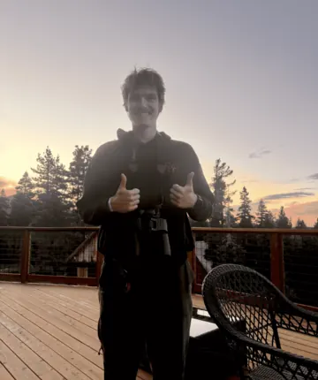
Colin Galbraith
PhD Student — Computer Science — University of Utah
About
I am 23 year old a PhD student in the School of Computing at the University of Utah, advised by Jenny Lin.
I previously earned my B.S. at the University of California Los Angeles (Applied Mathematics with a specialization in Computer Science).
My research interests lie at the intersection of computer graphics, deep learning, and computational fabrication.
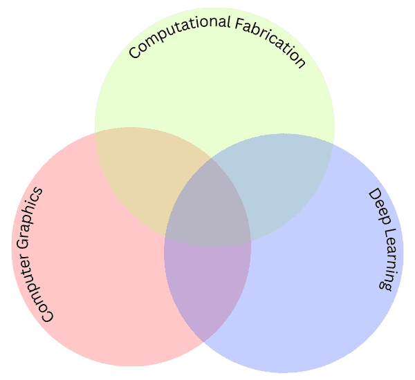
Research
KnitCapture.
Neural knitting pipeline for yarn geometry and mechanics.
AGEOABM.
City-scale epidemic simulator modeling disease spread.
Projects
WaterSim.
Real-time 3D PBF fluid simulation with energy correction.
Accoutre.
A playground for SLM orchestration and benchmarking.
SunkCost.
Brutally honest, privacy-first screen time tracker.
Open RAG Search.
Advanced retrieval-augmented generation system for intelligent document search and analysis.
PhasePlot.
Interactive 2/3D phase portrait web app for visualizing dynamical systems.
Cloth Simulation.
Basic interactive mass-spring cloth dynamics.
Education
- 2025-Current University of Utah, PhD in Computer Science.
- 2021-2025 University of California Los Angeles, BS in Applied Mathematics.
Experience
- U of Utah Graduate Research Assistant: developing neural knitting pipelines and differentiable yarn mechanics.
- UCLA Math Undergraduate Researcher: designed AGEOABM with Python and NetworkX for city-scale disease spread.
- UCLA PIC Lab Assistant: mentored 100+ students in C++, Python, and Java.
- OHSU & Janelia Applied Math Intern: analyzed temporal blinking dye patterns for super-resolution pipelines.
Photos
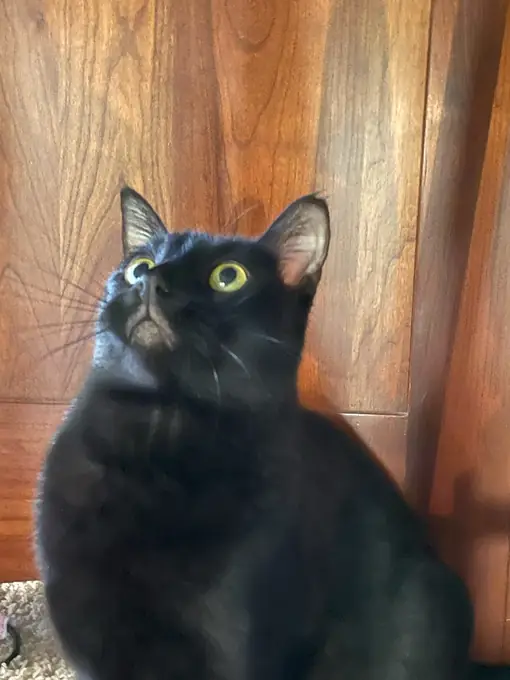
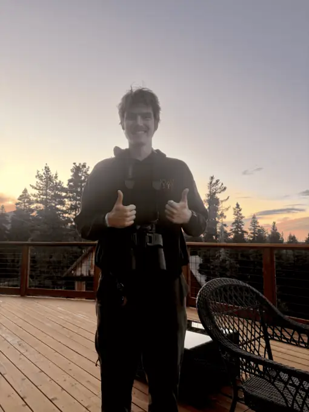
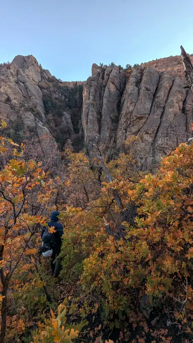
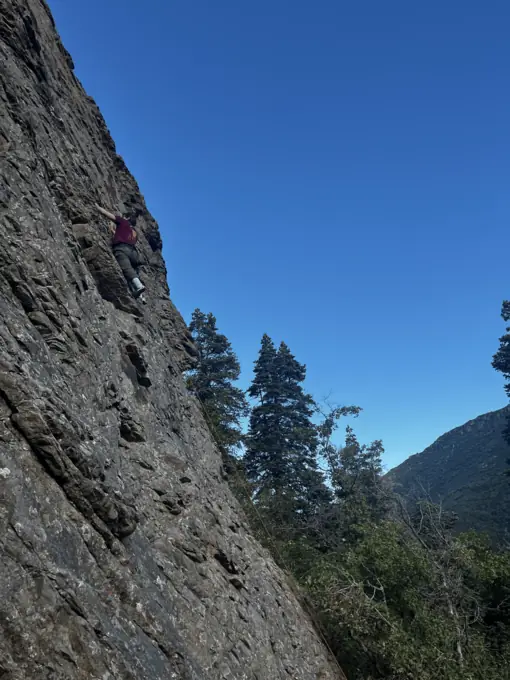
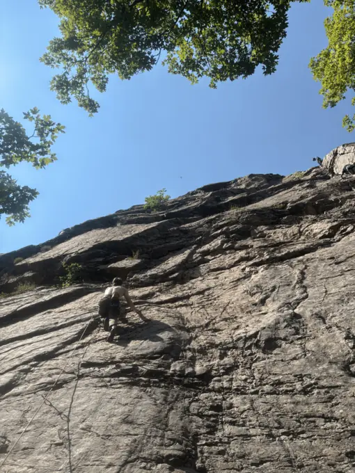
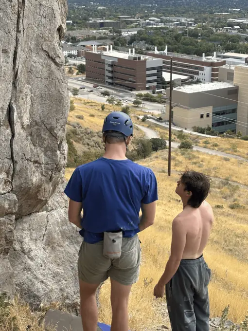
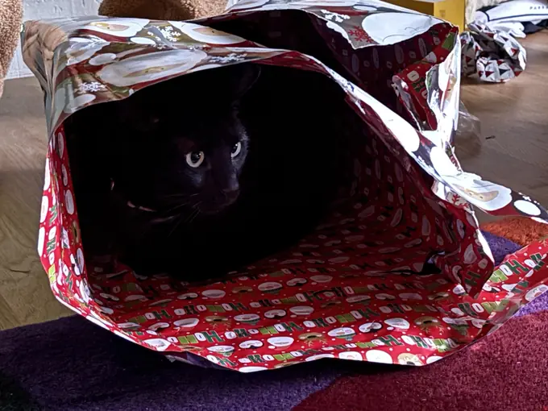
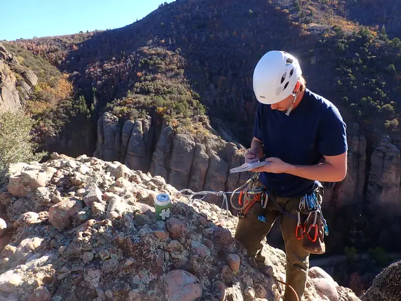
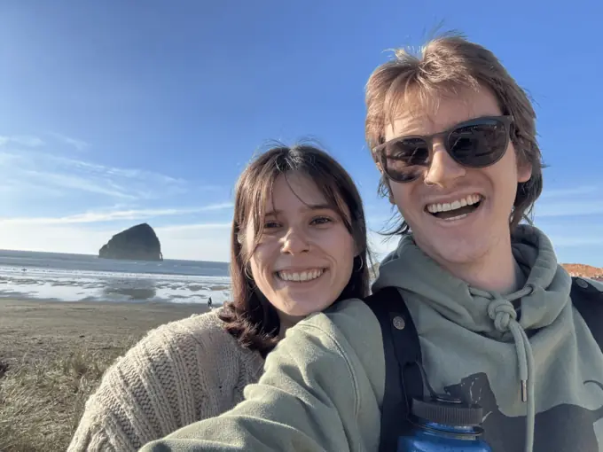
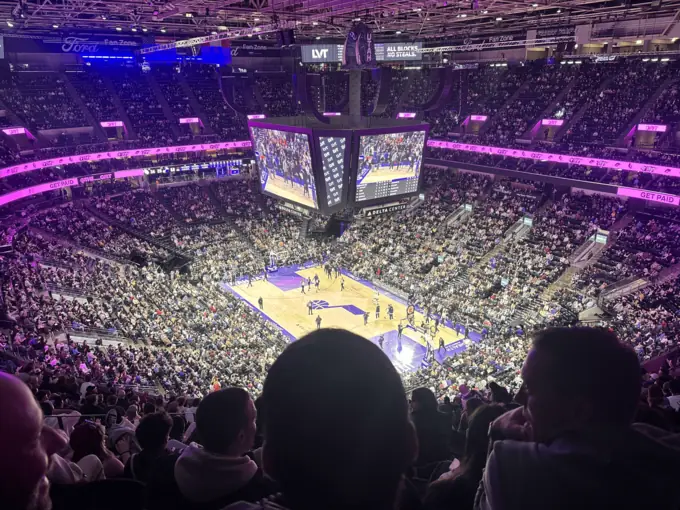
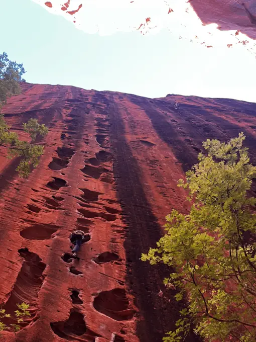
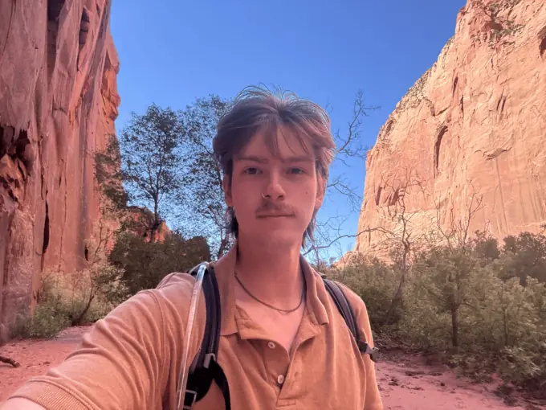
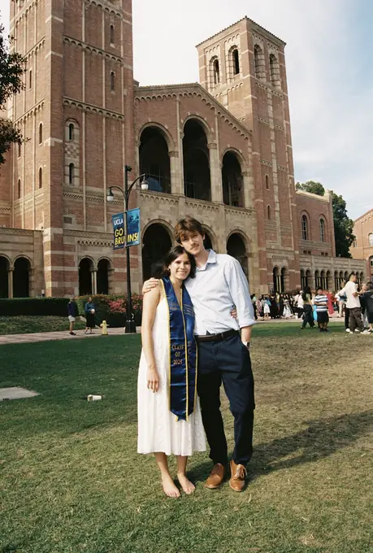
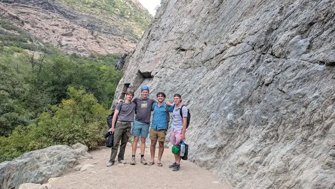